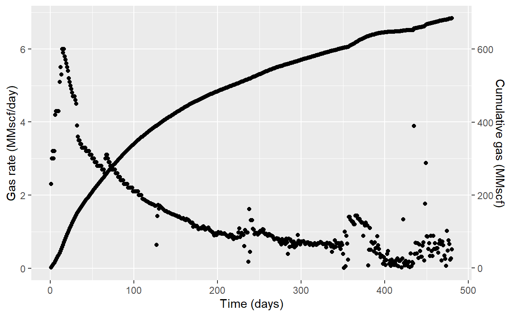
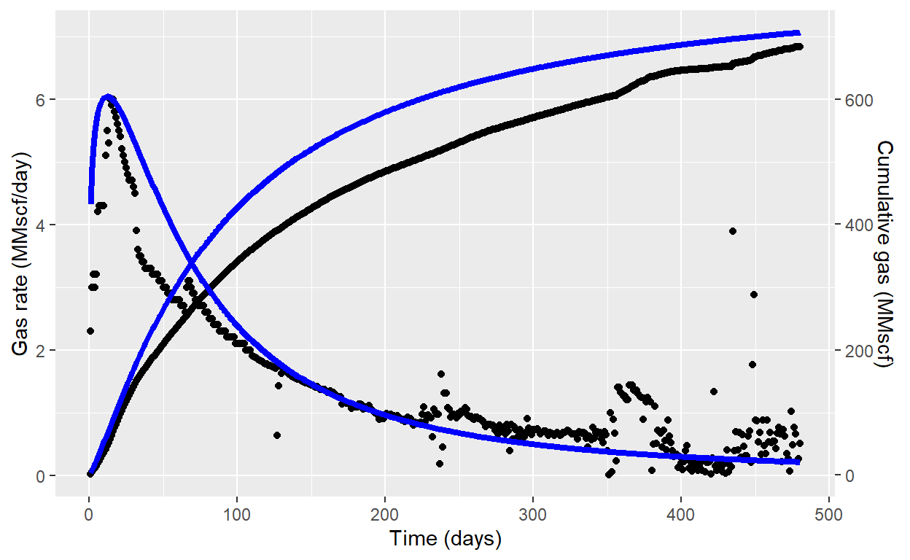
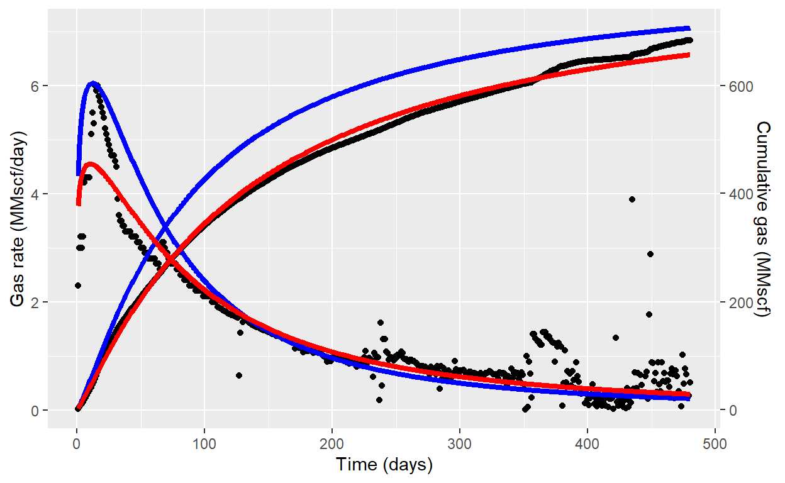

Hubbert used the LGM approach to predict the cumulative production from gas and oil fields or region
Hubbert (1956) was the first to employ the concept of LGM (Logistic Growth Model) in the oil industry. Hubbert used the LGM approach to predict the cumulative production from gas and oil fields or regions. Clark et al. (2011) proposed a three-parameter growth model to forecast the production growth from a production well; that is, cumulative oil “NP” or gas “GP.” Clark and co-authors proposed the following expression:
For cumulative oil \("Np"\) or gas \("Gp"\) \[Gp = \frac{(K)t^n}{a+t^n}\] For oil rate \("Qo"\) or gas rate \("Qg"\) \[Q_g = \frac{(K)nat^{n-1}}{(a+t^n)^2}\] The parameters \("a"\) and \("n"\) are regression variables that impact the shape and upwards and downward of the decline curve. The “K” acts as a bounded or maximum growth.
Data and example 18.7 (Ahmed, )
Matching observed production data using LGM method
Load data from .csv file
library(ggplot2)
library(plotly)
library(dplyr)
library(ggpubr)
library(crosstalk)
library(minpack.lm)
library(DT)
gas_rate <- read.csv("REH_Ch_18.csv")
datatable(gas_rate)
fig <- ggplot() +
geom_point(data = gas_rate, aes(DAYS,RATE), color = "black") +
geom_point(data = gas_rate, aes(DAYS,GP/100), color = "black") +
ylab("Gas rate (MMscf/day)") + xlab("Time (days)") +
scale_y_continuous(sec.axis = sec_axis(~ . * 100, name="Cumulative gas (MMscf)"))
fig

Assuming the following values for the three LMG parameters:
\[K = 800\] \[N = 1.2\] \[a = 220\]
gas_rate <- gas_rate %>%
mutate(Qg_cal = (800 * 1.2 * 220 * DAYS^(1.2-1))/(220 + DAYS^1.2)^2,
Gp_cal = (800 * DAYS^(1.2))/(220 + DAYS^1.2))
fig <- fig + geom_line(data = gas_rate, aes(gas_rate$DAYS,gas_rate$Qg_cal), color = "blue", size = 1.5) +
geom_line(data = gas_rate, aes(gas_rate$DAYS,gas_rate$Gp_cal/100), color = "blue", size = 1.5)
fig

We can use non-linear regression with minpack.lm package using
dca.LGM <- nlsLM(
RATE ~ (K.cal*n.cal*a.cal*DAYS^(n.cal-1))/(a.cal+DAYS^n.cal)^2,
data = gas_rate,
start = list(
K.cal = 800,
a.cal = 220,
n.cal = 1.2
)
)
coefficients(dca.LGM)
K.cal a.cal n.cal
808.044750 239.005696 1.124712 gas_rate$Qg_reg <- fitted(dca.LGM)
gas_rate$Gp_reg <- (coefficients(dca.LGM)[1]*gas_rate$DAYS^(coefficients(dca.LGM)[3]))/
(coefficients(dca.LGM)[2]+gas_rate$DAYS^coefficients(dca.LGM)[3])
fig <- fig + geom_line(data = gas_rate, aes(DAYS,Qg_reg), color = "red", size = 1.5) +
geom_line(data = gas_rate, aes(DAYS,Gp_reg/100), color = "red", size = 1.5)
fig

datatable(gas_rate)
Reference Ahmed, T (2019) Reservoir Engineering Handbook. Fifth edition.